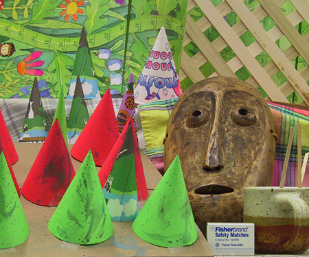

Assignment 2: Depth Estimation From Stereo and Video
Deadline: November 11 (Friday), 2022 at 5pm
Read carefully: Academic integrity must be strictly followed. Copying from other's code or from any sources is not allowed. Exchanging codes is not allowed. Software will be used to detect any forms of source code plagiarism. The maximum score for completing part 1 until part 4 is 85. More scores are given for submission on part 5. You must indicate the parts and numbers clearly. Your submitted code must be grouped/separated into the same parts as in the instructions. In your submission, you must provide us with all necessary libraries. If you use separate files in your submission, you must zip them to one file. The submission must not be in separate files in different times (it must be submitted together). The deadline is a strict deadline, so please prepare and plan early and carefully. Late submission will be deducted 2 points (out of 10) for every 24 hours.
Programming language: Python version 3. Submission: Jupyter Notebook (any other format won't be accepted). In your Jupyter notebook file, you must compile the codes and show the results there in the file. If you have multiple files in your submission, you must zip them into one file.
Part 1: Noise Removal
- Install Graphcuts for Python by installing from here. Ensure that your python
can call "import pygco" (in some setting pygco.py,
originally in the gco folder, should be able to be called
from your code). On the website, the execution of "make
download" might give you an error message, but you don't
need to worry as the graphcut code is already provided in
the "gco_source" folder.
Note that: There is an alternative graphcut wrapper called PyMaxflow [pypi | website]. However, it works only when the smoothness constraint is the same for all pixels. This PyMaxflow works fine for Parts 1 and 2, yet it doesn't provide optimal solutions for Parts 3 and 4, namely when \lambda is dependent on x. - Write a python program to clean up the noise of the image in Figure 1, by employing an MRF and the binary graphcuts. See the pseudocode in C here.
- Change the value of the weighting factor (lambda) of the prior term, and show some different results (due to different values of lambda). You must state the values of your lambda along with the corresponding results.
- Show your best result and provide some
discussion if necessary (particularly if the results are not
as good as expected).


Figure 1. Left: Input noisy image. Right: Expected output.
Part 2: Depth from Rectified Stereo Images
- Write a program to estimate a depth map from the pair of rectified images in Figure 2 using an MRF and multiple label graphcuts.
- Show your best result and provide some
discussion if necessary (particularly if the results are not
as good as expected).

Figure 2: A pair of rectified images
Figure 3: Groundtruth of the depth map.
Part 3: Depth from Stereo:
- Write a program to estimate a depth map from a pair of
calibrated images in Figure 4 using an MRF and graphcuts. The camera
matrices are available here. Note that, for finding the epipolar
lines using the provided camera matrices, you might want to use
the following equation:


Figure 4: A pair of non-rectified images - Note that, the images, camera matrices, and last equation are borrowed from the paper ("Consistent Depth Maps Recovery from a Video Sequence", TPAMI'09). In this paper, the mathematical notations are different from what I taught in class. However, if you use the notations consistently following the paper, then you should be fine.
- Show your best result, and provide some discussion if necessary (particularly if the results are not as good as expected).
Part 4: Depth from Video -- Basic:
- Write a program to estimate depth map from video using the method described in this paper: Depth Map from Video Sequence.
- Unlike the original steps in the paper, in this part of the assignment, you only need to implement the initialization and bundle optimization steps.
- For the input, use a video you can download from: here (300MB).
- The camera parameters of the video are provided in the zipped file in the download.
- The minimum number of frames to process is 5 frames. However, the grading will include the quality of your depth map, and the more frames you process, the higher the quality of your depth will be.
- Show some of your best results. Provide some discussion if necessary (particularly if the results are not as good as expected). Also mention how many frames you use to generate the best results.
- An example of the expected result:


Part 5: Depth from Video -- Advanced:
You will receive more scores if you include the following implementation in your submission. To be graded, you must provide some explanation on your implementation and results. You can choose any of the options below:
- Full implementation of the paper Depth Map from Video Sequence (all steps) on a full set of the provided video clip.
- Find the drawbacks of the paper, and implement your solutions. For this, you must explain the drawbacks, show the evidence of the drawbacks, discuss how your solutions can solve the drawback, and show the improved results (in comparison to the original results).
Submission:
Submit your Jupyter notebook file (containing: codes, results and answers of the questions) via LumiNUS. Again, your codes must be grouped/separated based on the parts above. Deadlines are strict. Late submission will be deducted 2 points (out of 10) for every 24 hours.